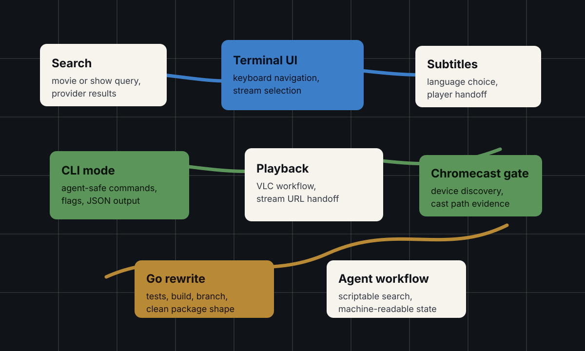
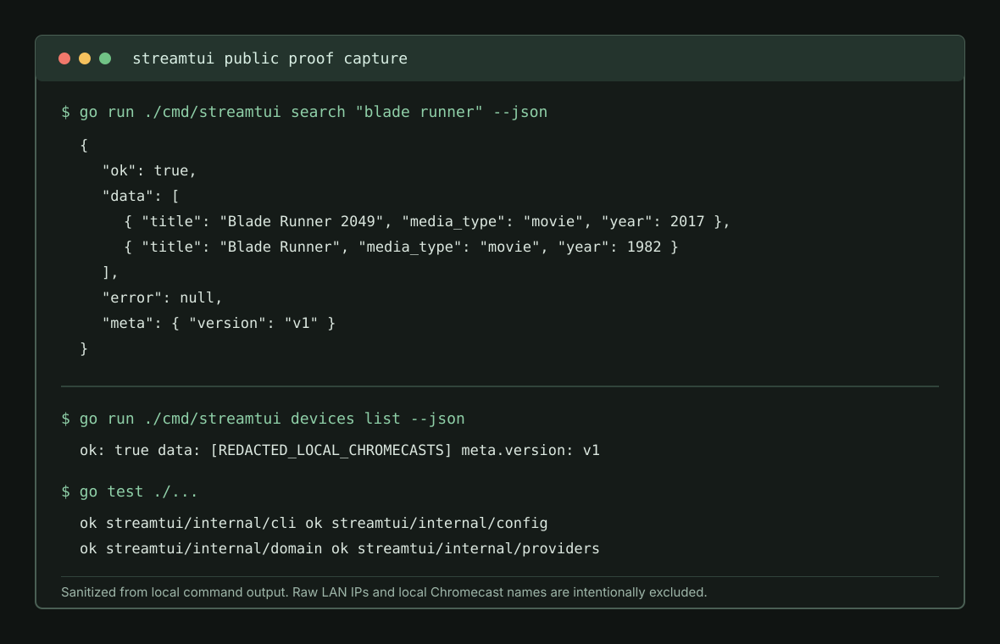
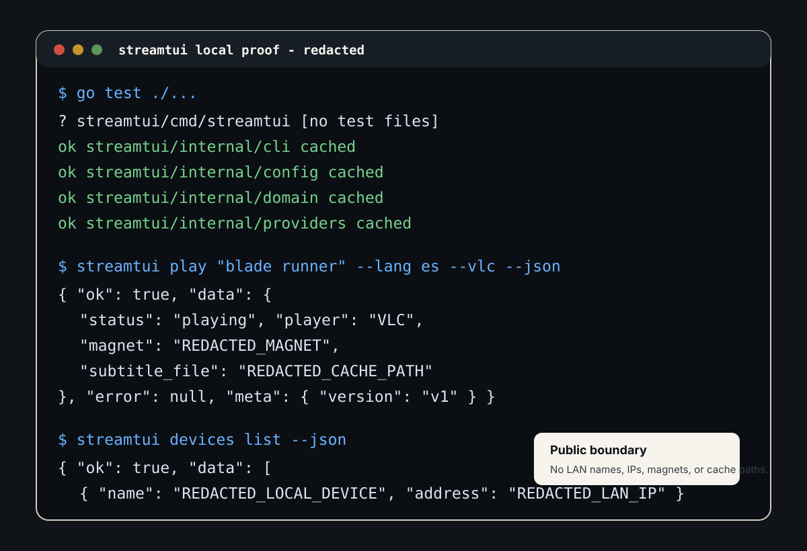
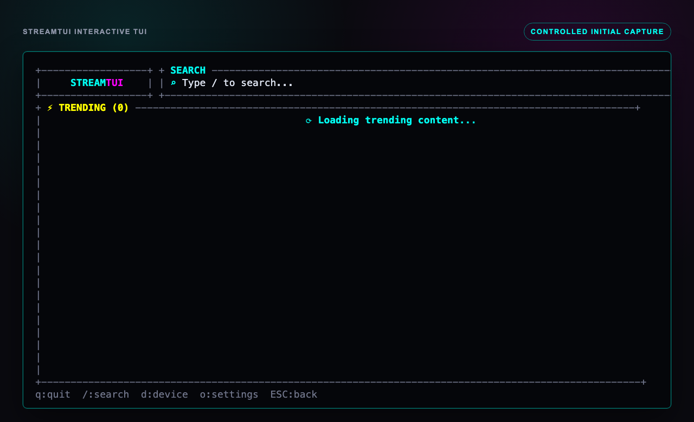

Problem
Media search and streaming workflows are usually trapped in GUIs, brittle scripts, or app-specific state. StreamTUI packages that workflow as a terminal product: searchable, keyboard-friendly, automatable, and inspectable by both humans and agents.
What I Built
I built StreamTUI as a fully usable TUI and CLI version of a Stremio/Popcorn Time style workflow: search, stream selection, subtitles, Chromecast casting, JSON automation, and agent-friendly control. I rewrote the README and pushed a Go rewrite branch with tests and build verification, with the original Rust test suite passing.
- Terminal productSearch, stream choice, subtitles, keyboard navigation, and player handoff.
- Automation surfaceCLI commands and JSON output designed for scripts and agent workflows.
- Rewrite proofGo branch pushed and verified with formatting, tests, build, and Rust regression tests.
System Architecture




Technical Decisions
- Keep the workflow useful as both a human TUI and a scriptable CLI.
- Expose JSON output so agents can inspect state instead of scraping terminal text.
- Preserve the original Rust proof while pushing a coherent Go rewrite branch.
- Treat Chromecast as a device-gated integration, not as a claim until hardware evidence is captured.
What This Proves
StreamTUI is engineer-volume proof: terminal UX, CLI design, automation-friendly interfaces, media workflow pragmatism, and the ability to package a tool so both engineers and agents can operate it.
Public Evidence
- README rewritten around terminal product signal.
- Go rewrite branch pushed and documented.
go test ./..., Go build,cargo test, and formatting checks recorded.- Local VLC JSON playback proof and Chromecast discovery proof captured with sensitive fields redacted.
- Controlled interactive TUI screenshot captured from the Rust binary.
- Sanitized JSON command proof — available on request.
Release Boundary
The source is public at gorkamolero/streamtui.